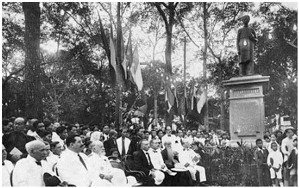
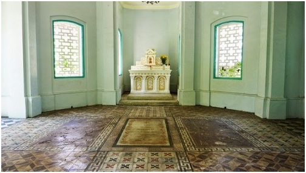

LE BIOGRAPHE
Année 1873-1874
PREMIER VOLUME
Deuxième livraison
Sommaire
1.- Allemand (docteur). 2.- Bonadona-d'Ambrun. 3.- Bonhomme (Honoré). 4.- Cazot (Jules). 5.- Chambron (général de). 6.- Chambord (Comte de). 7.- Chritopphle (Albert).
8.- Conte (Casimir). 9.- Desmaze (Charles). 10.- Duprat (Pascal). 11.- Dupuy (Charles).
12.- Garnier-Pages. 13.- Guizot. 14.- Lafayette (Oscar de). 15.- Lefèvre-Pontalis (Amédée) 16.- Marcou. 17.- Pétrus Ky. 18.- Saldonha (maréchal).
Lúc ấy, hiếm gì kẻ xu phụ thì thế để mua đường hiển vinh xuất đầu, chỉ có một mình Vĩnh Ký đã nhàm trong cuộc phong trần, muốn trọn lập thân hành đạo theo Thiên Chúa Giáo. Nhưng vì Đại Pháp đương lập Tân Chánh Phủ; còn các Giám Mục nghĩ rằng: Việc Chánh Giáo mới mở ra ngày nay, tình thế tương quan, rất nên trọng hệ, vậy mới phân trần cùng Vĩnh Ký phải ép lòng và gia sức mà tùng chánh cùng Thủy Sư Bonnard, điều đình chánh giáo cả hai đều đặng nhờ công bổ ích.
1862, theo Sứ Thần Simo ra Huế Nghị Hòa (Đại Nam Sử Ký)
1863, hộ tùng Pháp, Y Pha Nho (Espanol) Lưỡng Soái Bonnard và Bờ-lăng-ca cùng Đại Nam Sứ Thần Chánh Sứ Phan Thanh Giản, Phó Sứ Phạm Phú Thứ, và Bồi Sứ Ngụy Khắc Đản, như Tây, chước định hòa ước (Đại Nam Sử Ký).
1864, hộ tùng các Sứ Thần về Nam.
Vĩnh Ký trong 9 tháng giúp theo Sứ sự, đều đặng hoàn toàn; nhơn đó mà lại được quan sát nhơn tình, phong tục, chân lưu thành quách sơn xuyên, đã hơn phân nửa bên Âu Châu ấy là hạnh phước của Tạo Hóa tài bồi giúp cho nhơn tài cũng là đáng lắm!
1868, Vĩnh Ký xin lập ‘’Gia Định Báo’’, lãnh làm chủ nhiệm. Trong năm ấy, Triều Việt Nam gởi vào một phái Lê Văn Hiển, cậy Tân Chánh Phủ giúp cho học chữ Pháp, Vĩnh Ký lãnh làm Giáo Sư (Nam Việt Sử Ký).
Chánh Phủ Pháp, Y và Việt đồng nghị Vĩnh Ký là người có công theo giúp Sứ Bộ, nên đồng thì ban thưởng ‘’Khuê Bài’’ để làm Kỷ Niệm.
1869, Pháp Soái cho theo giúp Quan Sứ Y Pha Nho (Espagnol) ra Huế đặng nghị việc Thông Thương.
Vì cớ lãnh dạy ‘’Việt Nam Học Sanh’’ và giúp Sứ Y giao thông ‘’Việt Nam Thương Sự’’, nên ngày sau Tân Chánh phủ chỉ trích cho Vĩnh Ký có ý riêng chuyện lo giúp sự ngoại giao, mới sanh nghi kỵ, khiến cho Vĩnh Ký phải dưỡng hồi thao quan, lần chót năm (1879) để phòng tỵ họa.
1872, thăng nhứt hạng Tri Huyện, nhưng lãnh Đốc Học dạy những người Langsa học tiếng Phương Đông.
1873, lãnh làm Hội Đồng Thành Phố Chợ Lớn.
1875, lãnh làm Chánh Đốc Học Trường Tham Biện Hậu Bổ (Ecole des Administrateurs stagiaires).
1879 sắp về sau không nệ nhọc, cứ Trước Thợ, Lập Ngôn:
1.- Sách Mẹo (Grammairie). 2.- Chuyện Đời Xưa. 3.- Conversation ca. 4.- Túy Kiều dịch. 5.- Toát Lược Ca. 6.- Nam Việt Sử Ký. 7.- Truyện Lang Sa. 8.- Sự Tích Nước Ta. 9.- Truyện Đường Trong. 10.- Truyện Annam. 11.- Cao Man Ân Thoại. 12.- Sơ Học Vấn Tân. 13.- Tứ Thơ Diễn Nghĩa. 14.- Pháp-Việt Tự Điển. 15.- Bắc Kỳ Phong Cảnh. 16.- Trương Lương Tùng Xích Tùng Tử Ca. 17.- Trường Lưu Hầu Phú. 18.- Gia Định Thất Thủ Ca. 19.- Tân Gia Định Ca. 20.- Chuột Kể Truyện. 21.- Kiếp Người Ta. 22.- Nữ Tắc. 23.- Mẹ Dạy Con. 24.- Mẹ Dạy Con Gái Làm Dâu. 25.- Huấn Nữ. 26.- Gia Huấn. 27.- Bất Cưỡng. 28.- Annam Lễ Tiết. 29.- Luật Mẹo Thầy Trò. 30.- Truyện Xưa. 31.- Bài Hịch ‘’Quạ’’. 32.- Thạch, Suy, Bỉ, Thái, Ca. 33.- Hàn Gia Phong Vị. 34.- Kinh Ba Chữ. 35.- Nhựt Khoa Gia Huấn. 36.- Tự Vị Lang Sa.. 37.- Thông Loại Khôn Trình. 38.- Minh Tâm Diễn Nghĩa.
Vĩnh Ký có ý thương vì đương cơn thế loạn, Đạo Nghĩa tro tàn, e cho Nam Kỳ ta những nhà Đạo Đức, Văn Chương thế chẳng khỏi càng ngày càng suy bại! Bởi vậy cho nên lo Trước Thơ, Lập Ngôn, như đã nói trước đó, mà tùy thời sắp đặt sự dạy dỗ người, chẳng chia gì là người Âu, kẻ Việt, coi đồng một bực. Miễn là duy trì Đại Học được còn lại trong Nam Kỳ muôn một là may! Hỡi ôi! Chìm thuyền giữa dòng nước, được một cái bầu nổi, cầm đáng ngàn vàng. Vô cùng cảm khái!!!
1883, Chánh Phủ nghị Vĩnh Ký có công Trước Thơ, Lập Ngôn, thưởng thọ Hàn Lâm Bài (Palmes d'Acadénie).
1886, vì cớ Quyền Thần nước Nam ta là Nguyễn Văn Tường và Tôn Thất Thuyết gây loạn trong nước, cưỡng hiếp Vua Hàm Nghi xuất bôn. Triều Thần phải tôn Vua Đồng Khánh tức vị và chỉnh lý Triều Chánh, song cả nước còn nhiều việc nhiễu nhương! Nên lúc ấy Đông Pháp Toàn Quyền Đại Thần Paul Bert phải ra Huế đặng điều đình sự Bảo Hộ, chọn Vĩnh Ký ra tùng sự (27 mars 1886)
Vĩnh Ký vì Paul Bert làm lời dụ:
1.- Bày Tình Pháp-Việt Nhứt Gia.
2.- Rộng Mở Sự Giáo Dục.
3.- Giữ Gìn Quyền Lợi, Lý Tài Nước Ta.
4.- Khai Khoán (mỏ than, đồng v.v...)
5.- Khuyên Đừng Bạo Động.
6.- Không Tăng Thuế.
7.- Lập Nghị Viện.
Đem những chánh sách công bình, đồng lực, hiệp tác, ước sẽ thật hành mà tuyên bố cho công chúng Trung, Bắc lưỡng kỳ nghe rồi thảy đều duyệt phục.
Dụ ấy chỉ dùng lấy Quốc Văn mà nghị luận kinh tế đủ điều; ai còn gọi tiếng Annam rằng ‘’Nghèo’’? Mà mấy ai được biết Vĩnh Ký đã từng giảng giải sự trị quốc???
Việc Huế vừa yên, Paul Bert thẳng ra Bắc Kỳ, để Vĩnh Ký ở lại Huế giúp Vua Đồng Khánh sắp đặt việc chánh trị và dạy vua học chữ pháp. Vua Đồng Khánh đặt tú Vĩnh Ký lãnh chức ‘’Hàn Lâm Viện Thị Lang’’, sung ‘’Ngự Diên Giảng Quan’’.
Từ ấy nước Nam ta mới sửa lại có Triều Đình thể thống lại có quyền tự chủ, vinh diệu hơn xưa; thật là may! Nhờ có Vĩnh Ký cùng Toàn Quyền Paul Bert ngoại giao tương đắc, Vua Đồng Khánh lại biết dùng Vĩnh Ký, liên lạc tình thâm; mà Vĩnh Ký vẫn có làng ái quốc (*) nên mới này ra nhiều chước thi thố làm nên đại cuộc chuyển nguy vi an; cơ hội tốt vậy thay! Thiên tải nhứt thì, ngày nào còn trông được như vậy nữa???
Chú thích:
(*) Xem trong ‘’Trương Vĩnh Ký Hàn Uyển Lục’’ 7 bức thư nguyên chữ Pháp, ở trong tập ‘’six nois de vie politique avec Paul Bert à Huế’’, và bài thi nguyên chữ Nho, của Vua Đồng Khánh tặng Trương Vĩnh Ký, dịch ra, để sau đây, thời rõ được Toàn Quyền Paul Bert, Trương Vĩnh Ký, và Vua Đồng Khánh giao lân kết hữu, tình tự rất dài, mà chỉ quyết làm điều công ích cho ‘’nhân loại’’.

Lễ khánh thành tượng Trương Vĩnh Ký ngày 24.12.1927 trên đường Norodom.
Cũng trong năm ấy Vĩnh Ký lại được tin Paul Bert cậy hộ tùng Vua Đồng Khánh ngự giá Bắc Tuần (ra Bắc dẹp loạn Văn Thân) hai tháng, sự yên, về Huế. Dùng diệp muốn tịnh dưỡng, nên cáo từ Paul Bert và Vua Đồng Khánh tống tặng rất hậu. (Thi từ chép sau). Pháp chánh phủ thưởng cho ‘’Ngũ Đẳng Bội Tinh’’ (Croix de Chevalier de la Légion d'Honneur). (2 août 1886).
Chẳng bao lâu, lại nghe tin Paul Bert từ trần (11 Novembre 1886, lịch sử của Paul Bert lượng dịch chép sau), Vĩnh Ký riêng than: ‘’Mất hết một người tri kỷ, tình tự nói ra càng dài, tâm sự tỏ cùng ai nữa? Đại Thống tích tai!!!
Chẳng biết về sự cơ mật nên chánh phủ lại nghi kỵ Vĩnh Ký một lần nữa. Vĩnh Ký tính lấy thi kỳ nên thối ẩn; nhưng mà qui kế vị an bài, cho nên cũng gắng gượng giữ lấy sự thường, dạy học trò là vui ; dầu có lãnh lương của chánh phủ ít nhiều chẳng luận, cứ phải từ ngày mà thôi, không theo ngạch quan viên bổng hướng nào cả!
1898, được 62 tuổi, phát bịnh khai huyết, y trị không xong; vừa ít tháng quên quáng, (1 Septembre 1898)! Y! Hóa công mạc khẳng gia thụ ư tư nhân giả da!
Chánh phủ cho lấy nhung lễ (*) tống táng trọng thể, an thổ tại Chợ Quán (Sài Gòn)
Chú thích:
(*) Theo lễ Langsa tống táng người có công được lãnh Ngũ Đẳng Bửu Tinh thời có phái đội lính Langsa và lính Tập Annam theo hầu đưa linh cữu đến huyệt tới an thổ.
Vĩnh Ký bình sanh không dùng Âu phục, không vào Pháp tịch. Có nhiều khi môn đệ hỏi thăm sự vào Pháp tịch, thời trả lời rằng: ‘’Nếu mình vào bộ dân Langsa, thời mất bộ dân Annam còn gì???
Lúc Vĩnh Tiên (con trai Vĩnh Ký) mới sanh vừa thấy mặt, rồi mất. Vĩnh Ký nói: ‘’Thế gian như khổ ải, nên nó chẳng cần gì ở lại cho lâu!’’
Vĩnh Ký chẳng lấy sự buồn, vui làm giới ý; hay nói: ‘’Người ta lúc nào gặp sự buồn, thời nên vui lần, sẽ có sự vui theo sau; lúc nào gặp sự vui, thời nên buồn lần, dẫu ngày khác có sự buồn sẽ tới, không đến hại.’’
Đại loại ngôn từ, cử chỉ của Vĩnh Ký trọng về phần đạo đức rất nhiều.

Mộ Petrus Trương Vĩnh Ký
Tử viết: ‘’Bác học ư văn, ước chi dĩ lễ, diệc khả dĩ phất bạn hỉ phù tư chi vị dư’’. Đức Phu Tử nói: ‘’Rộng học văn chương, dón lấy lễ nghĩa, cũng cho là không trái đạo vậy’’, ấy là nói chuyện người nấy vậy ru!!!
1908, Nam Kỳ sĩ phu đồng đứng xin chánh phủ chuẩn cho dựng hình Vĩnh Ký để làm Kỷ Niệm, chánh phủ phê y. Lúc ấy tôi đương chấp bút Nông Cổ và Lục Tỉnh Tân Văn, có ít lời vận động quyên ngân, chẳng mấy ngày mà công chúng hỉ cúng rất nhiều.
Diên trì cho đến 1923, trong ‘’Hội’’ lo dựng hình Vĩnh Ký, đặt làm hình bên Pháp đem qua, chỉ có một cái đầu hình (buste) mà thôi. ‘’Hội’’ muốn dựng, nhưng mà công chúng kích bát ‘’Hội’’, không chịu! Đã hèn (từ) lâu, bây giờ (1927) mới dựng được toàn hình, dựng nơi phần đất đường Norodom trước Dinh Quan Toàn Quyền Sài Gòn. Sự dựng hình Vĩnh Ký ngay nay rất cảm bội tấm lòng ái mộ của công chúng. Nhưng mà đối với tâm thuật của Vĩnh Ký, lấy đạo đức mà suy ra, thời thật không có điều chi vọng tưởng là vinh diệu. Hỡi ai là ‘’Thần du vân, thủy, Đạo tại nhân gian?’’ (Tinh thần đạo chơi trên mây, nước; đạo đức còn ở trong cảnh người) là vinh diệu hơn, mà vinh diệu ấy, biết mấy trăm năm trường cửu!!! Tình như vậy, thời nên tưởng cho hình Vĩnh Ký đối với hình Paul Bert ở nơi Hà Nội, có lẽ hai Đạo tinh anh phát hiện, thường khi hội ngộ linh kỳ! Mà toan lo những việc chi đây???
Vĩnh Ký phu nhân là Vương Thị Thụ (thành hôn 1863), chết 1907, có con trai và gái 9 người:
1.- Trương Vĩnh Thế, Tri Phủ. 2.- Thị Gia. 3.- Vĩnh Viết, Đốc Phủ Sứ. 4.- Thị Tự. 5.- Vĩnh Trọng. 6.- Vĩnh Mỹ. 7.- Vĩnh Kỳ. 8.- Vĩnh Tiên. 9.- Vĩnh Tống.
1927, tôi nhờ có rể của Vĩnh Ký là Nguyễn Hữu Nhiêu, hiện kinh làm ngoại Công Sư (Architecte civil), người ngoài 60 tuổi, tánh chất thuần hậu, tợ hồ nhập đạo. Vẫn biết tôi tần quen với Vĩnh Ký trong khi ở Bắc, và lúc về Nam, nên lượm lặt các món tàn biên đã gần mất, nói về lịch sử của Vĩnh Ký, đều giao cho tôi phụ làm truyện nầy.
Viết truyện nầy rồi, gát bút thêm buồn cho người đời nay có kẻ hay tự phụ là: Văn minh, tấn bộ, ái quốc, nhiệt thành, thế mà không ngôn vô bổ! Không thấy chút nào là sự thật thành. Chỉ thấy người thời lăn xăn đọc ít câu diễn thuyết, người thời hốp tốp viết ít tờ nhựt trình, đặng hô hào rằng. ‘’Mình văn minh, tấn bộ, ái quốc, nhiệt thành’’, để chưng cho ra diện mạo ‘’Chí Sĩ’’. Đọc truyện nầy chưa??? Đó! Có đủ đạo đức chân tướng, mới phát anh kiệt toàn tài. Văn minh tấn bộ như vậy đó, ái quốc, nhiệt thành như vậy đó! Người bây giờ đứng vào địa vị nào???
Tôi nguyền sống thêm 40 tuổi nữa cho đủ 100, đã sẵn cái thú vị trời chiều mát mẻ, ngồi dưới bóng cây mà lại được ngửi những mùi thơm của hoa nở trong các thứ cây kia sẽ được ăn trái, đặng mà làm thêm một truyện của người như vầy nữa, biết có đặng không?
Thập Bác Phù Viên
Đặng Thúc Liêng
Sadec (Cochinchine)